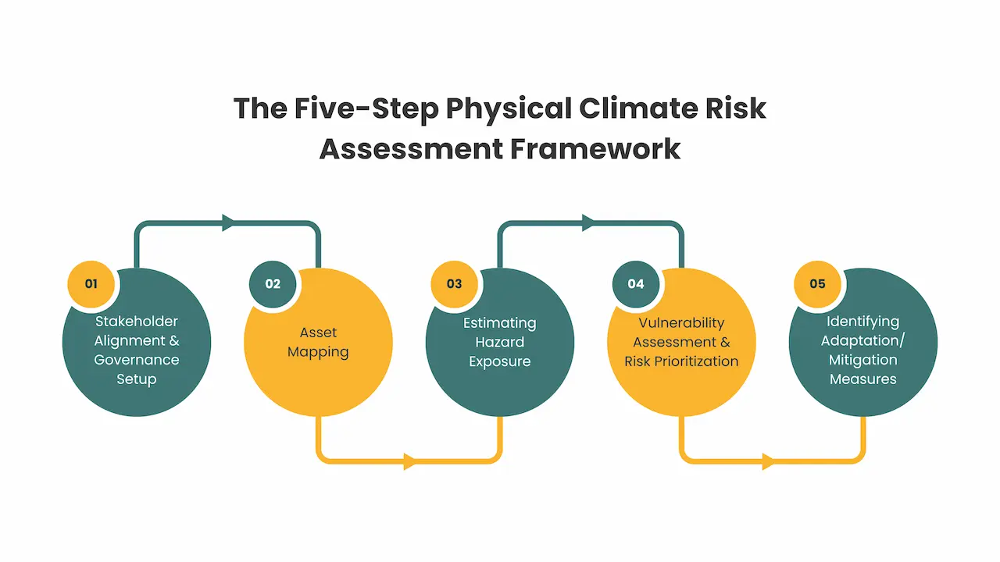

Physical climate risks are affecting businesses globally. Recent years have seen escalating extreme weather events, from heatwaves and flooding in India and the Middle East to wildfires, drought and across the United States, U.K., and Europe. These events cause significant financial impacts to companies through loss/damage to assets, supply chain interruptions, workforce productivity impacts, and increased insurance and resilience costs.
According to data compiled by the IPCC, "it is unequivocal that human influence has warmed the atmosphere", increasing the frequency and intensity of both acute climate hazards and chronic climate shifts. As a result, frameworks such as as Taskforce on Climate-related Financial Disclosures (TCFD), International Sustainability Standards Board (ISSB) S2, and regulations like SB-261 now require organizations to systematically assess and disclose physical climate risks, along with their financial impacts.
This article, builds on our earlier blog on physical and transition risks, focusing on the question organizations face on how to systematically estimate physical climate risks in a way that helps to make decisions, align with regulations, and be operationally actionable. The framework explained below provides a structured approach that can be used in real-world climate risk assessments, translating climate science and hazard exposure data into business-relevant risk insights.
The Five-Step Physical Climate Risk Assessment Framework

Step 1 - Stakeholder Alignment & Governance Setup
Firstly, organizations must establish internal alignment on scope, objectives, roles, and expectations before undertaking a climate risk assessment. Physical climate risk assessments cut across various functions like real estate, operations, facilities, procurement, HR, IT, finance, and risk and each team which owns critical insights. Structured stakeholder engagement is required, mostly through workshops and working sessions, to:
- Build a shared understanding of what physical climate risk is and why it matters from a business and regulatory perspective
- Define assessment boundaries (time horizons, geographies, assets)
- Agreement on climate scenarios
- Clarify data ownership and accountability across teams
- Secure buy-in from operational teams whose inputs are required throughout the exercise
In our experience, dedicating time upfront to stakeholder alignment materially reduces downstream data gaps, rework, and resistance, and strengthens governance disclosures under TCFD and SB-261.
Step 2 - Asset Mapping
To perform a physical climate risk assessment, a clear and granular picture of which assets of the company are exposed is required. Asset mapping is a structured exercise that captures four layers of exposure:
- Owned and leased physical assets - e.g. offices, data centres, delivery centres, and warehouses. This is the most visible layer of exposure.
- Workforce distribution across the organization - Workforce distribution must be captured keeping in mind, the actual location of the employees from where they work and not the location to which they are officially tagged to by the company. In a global IT services or outsourcing model, workforce concentration in specific regions can become a significant vulnerability during acute climate events like heatwaves or floods, especially when remote work options are limited or infrastructure in those regions is unreliable.
- Operational dependencies - These include the systems, utilities, and infrastructure, the company's assets rely on to function. For e.g. if a data centre is in a region prone to flooding, the risk isn't just to the building, it's to the grid and cooling systems that keep it running.
- Supply chain and third-party exposure - These include upstream suppliers, outsourced operations, and critical service providers. A disruption at a key supplier's facility due to the supplier being in a flood-prone region can stall the firm's operations even if the firm's own assets are unaffected.
Performing the asset mapping process helps to create a decision-ready map of where the organization is physically exposed and to determine the boundary of the exercise.
Step 3 - Estimating Hazard Exposure
This step entails the identification of acute (e.g., floods, cyclones, heatwaves) and chronic physical risks (e.g., rising temperatures, water stress, drought), across short, medium, and long-term horizons in chosen scenarios at the selected locations of the company.
Choosing Time Horizons and Climate Scenarios
At a minimum, organizations should select:
- Two contrasting climate scenarios (one lower-emissions pathway and one higher-emissions pathway) to reflect a plausible range of future climate outcomes, consistent with TCFD/ISSB S2 expectations. Reference climate scenarios are provided by organizations like IPCC, IEA, NGFS etc.
- Time horizons aligned with business reality, rather than arbitrary future dates.
In practice for choosing time horizons:
- Short term (0-5 years) should align with operational planning and budgeting cycles (e.g., workforce planning, facility operations, supplier contracts).
- Medium term (6-15 years) should reflect strategic investment and asset-lifecycle decisions (e.g., office leases, data centre investments, infrastructure upgrades), ranging between 5-15 years.
- Long term (16-30 years) should capture the full lifetime of critical assets and long-range strategic exposure especially regarding infrastructure and real-estate, even where uncertainty is higher.
The ranges given above can vary according to different sectors and organizational context and should not be considered as fixed thresholds.
Aligning scenarios and horizons upfront ensures that:
- Risk outputs are decision-relevant
- Different business functions interpret results consistently
- Subsequent modelling and financial translation remain coherent and defensible
Tool & Data Source Selection
Appropriate hazard-specific tools and datasets are selected to reflect the hazards, geographies, time horizons and scenarios identified. In practice, this often requires combining multiple sources rather than relying on a single platform. For example, the below shown open-source tools are widely used while performing a physical climate risk assessment.
- ThinkHazard! for rapid, high-level location-based screening of exposure to key natural hazards and indicative risk severity
- WWF Risk Filter for assessing biodiversity and water risk
- WRI Aqueduct Water Risk Atlas for water stress, flooding, and drought risk
- OS-Climate PhysRisk library for scenario-aligned physical risk datasets for various hazards
- NASA's LHASA for landslide susceptibility in high-risk regions
- World Bank Climate Change Knowledge Portal for country-level climate projections and historical baselines of various parameters like maximum and minimum average temperature etc.
Organizations can also leverage proprietary platforms that offer better spatial resolution, advanced analytics, or integrated financial risk modelling capabilities. Tool selection is guided by hazard relevance, spatial resolution, scenario compatibility, and transparency, ensuring outputs are robust and explainable. For example, ThinkHazard! can be used for rapid, high-level assessments, while WRI Aqueduct Water Risk Atlas is used to do a deep dive into water risks.
Using the tools, for each physical hazard at all selected locations, the hazard exposure is estimated at all selected time horizons, in the specific chosen scenarios. These tools help to downscale exposure to an asset level.
Step 4 - Vulnerability Assessment & Risk Prioritization
Once hazard exposure has been quantified across locations, the next step is to determine how severely those hazards could disrupt the business. Vulnerability assessment translates climate exposure into business-relevant risk by combining three dimensions:
- Sensitivity - The degree to which assets, operations, or workforce are affected when a hazard occurs. For example, data centres, servers, and mission-critical IT infrastructure are highly sensitive to heat, flooding, and power interruptions, while administrative offices may be less sensitive.
- Business Criticality - The importance of each asset or location to core operations. Locations supporting critical clients, centralized service delivery, or irreplaceable capabilities carry higher risk even if physical exposure is moderate.
- Adaptive Capacity - The existing ability of a site or function to cope with or recover from climate impacts, such as backup power, cooling redundancy, flood protection, distributed delivery models, or remote work options.
These dimensions are combined with hazard exposure scores to produce a location- or asset-level vulnerability rating which will help in comparability and prioritization.
This will help in arriving at a risk-ranked portfolio of locations, grouped into tiers (e.g., high, medium, low vulnerability). For first-time assessments, organizations should focus on locations that are both:
- Highly exposed to physical hazards, and
- Highly critical to business continuity or value creation
This prioritization ensures that attention and resources are directed toward the risks that matter most from an operational and strategic standpoint.
Linking Vulnerability to Financial Impact
Vulnerability outputs can also serve as a foundation for translating physical risks into financial impacts. This does not require full actuarial modelling and proxy-based approaches can provide directional insight.
For example, exposure to heatwaves can be linked to impacts on workforce productivity. Studies show that sustained exposure to temperatures above 35°C leads to decline in labour productivity. Using climate datasets like for e.g., projected number of days greater than 35°C days across scenarios and time horizons, organizations can estimate potential productivity losses across site locations. When applied to revenue forecasts, it provides an indicative view of how escalating number of heatwaves could translate into financial risk.
Approaches such as the above help management contextualize physical climate risk in economic terms and support investment prioritization in resilience measures.
Step 5 - Identifying Adaptation/Mitigation Measures
Once high-risk locations have been identified and prioritized, the focus shifts from analysis to response. Adaptation planning evaluates whether existing resilience measures are sufficient and defines targeted interventions where risk exposure remains high.
Based on vulnerability rankings, adaptation and mitigation recommendations can be developed for each priority site across time horizons:
- Short-term measures focus on operational readiness and monitoring. For example, in highly water-stressed locations, an immediate step may involve establishing water consumption measurement, benchmarking usage against site typologies, and implementing conservation protocols.
- Long-term measures address structural resilience. This may include installing rainwater harvesting infrastructure, investing in water recycling systems, or supporting watershed restoration initiatives to improve long-term water availability.
All recommendations must be evaluated against stakeholder needs, cost implications, feasibility, and geographic relevance. The outcome is a prioritized adaptation roadmap aligned with business criticality and enterprise risk appetite.
How This Framework Aligns with TCFD/ISSB Requirements
The framework maps directly to disclosure pillars under TCFD and ISSB S2. Governance alignment and scenario definition inform strategy and oversight, while hazard and vulnerability assessments embed climate risk within enterprise risk management. Risk metrics, prioritization outputs, and adaptation plans provide the evidence base for metrics, and targets.
Conclusion
Physical climate risk assessments are no longer optional, it is a regulatory expectation, an investor requirement, and an operational necessity. But moving from high-level acknowledgment to location-specific, scenario-based assessment requires technical rigor, cross-functional coordination, and access to the right data and methodologies. ecoPRISM supports organizations in building this capability, from stakeholder alignment and hazard modeling through to disclosure-ready outputs aligned with TCFD, ISSB S2, hence helping with SB-261 compliance. Whether you're conducting your first physical climate risk assessment or refining an existing approach, our services help translate climate science into business-relevant risk insights and risk insights into strategic action.